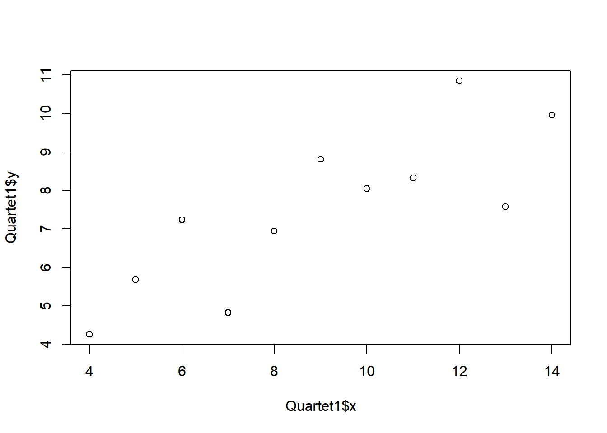
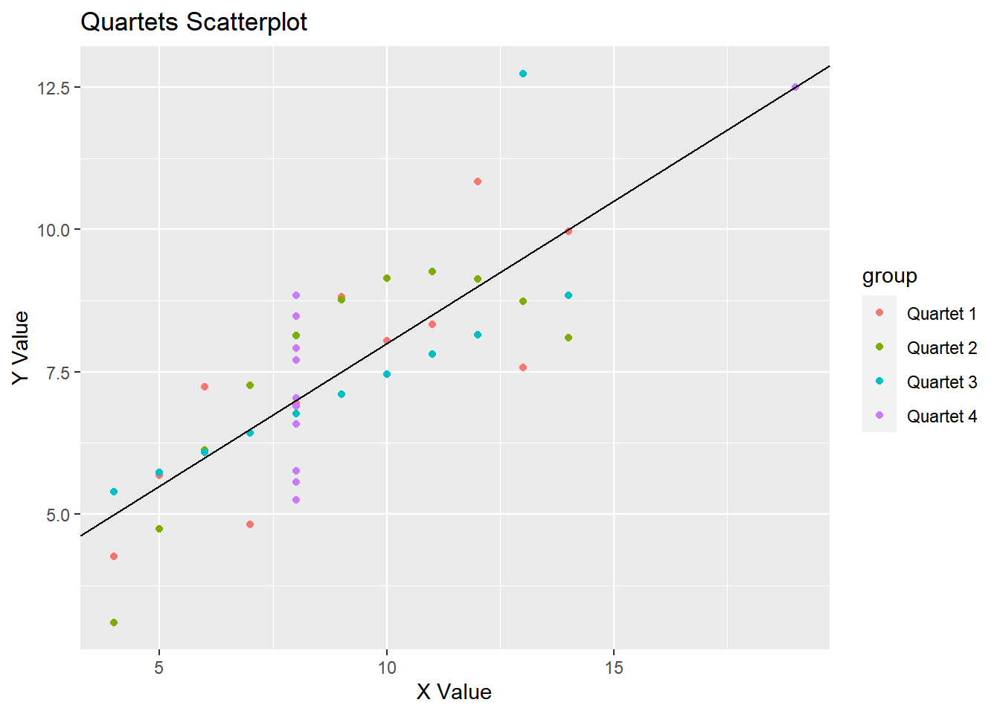

Measuring the Middle
Alea Wilbur
Updated: 2021-03-09
quartets## x y group
## 1 10 8.04 Quartet 1
## 2 8 6.95 Quartet 1
## 3 13 7.58 Quartet 1
## 4 9 8.81 Quartet 1
## 5 11 8.33 Quartet 1
## 6 14 9.96 Quartet 1
## 7 6 7.24 Quartet 1
## 8 4 4.26 Quartet 1
## 9 12 10.84 Quartet 1
## 10 7 4.82 Quartet 1
## 11 5 5.68 Quartet 1
## 12 10 9.14 Quartet 2
## 13 8 8.14 Quartet 2
## 14 13 8.74 Quartet 2
## 15 9 8.77 Quartet 2
## 16 11 9.26 Quartet 2
## 17 14 8.10 Quartet 2
## 18 6 6.13 Quartet 2
## 19 4 3.10 Quartet 2
## 20 12 9.13 Quartet 2
## 21 7 7.26 Quartet 2
## 22 5 4.74 Quartet 2
## 23 10 7.46 Quartet 3
## 24 8 6.77 Quartet 3
## 25 13 12.74 Quartet 3
## 26 9 7.11 Quartet 3
## 27 11 7.81 Quartet 3
## 28 14 8.84 Quartet 3
## 29 6 6.08 Quartet 3
## 30 4 5.39 Quartet 3
## 31 12 8.15 Quartet 3
## 32 7 6.42 Quartet 3
## 33 5 5.73 Quartet 3
## 34 8 6.58 Quartet 4
## 35 8 5.76 Quartet 4
## 36 8 7.71 Quartet 4
## 37 8 8.84 Quartet 4
## 38 8 8.47 Quartet 4
## 39 8 7.04 Quartet 4
## 40 8 5.25 Quartet 4
## 41 19 12.50 Quartet 4
## 42 8 5.56 Quartet 4
## 43 8 7.91 Quartet 4
## 44 8 6.89 Quartet 4# Look at only Group 1
filter(quartets, group == "Quartet 1") x y group
1 10 8.04 Quartet 1
2 8 6.95 Quartet 1
3 13 7.58 Quartet 1
4 9 8.81 Quartet 1
5 11 8.33 Quartet 1
6 14 9.96 Quartet 1
7 6 7.24 Quartet 1
8 4 4.26 Quartet 1
9 12 10.84 Quartet 1
10 7 4.82 Quartet 1
11 5 5.68 Quartet 1To learn more, see Interactive Documents.
Inputs and Outputs
You can embed Shiny inputs and outputs in your document. Outputs are automatically updated whenever inputs change. This demonstrates how a standard R plot can be made interactive by wrapping it in the Shiny renderPlot function. The selectInput and sliderInput functions create the input widgets used to drive the plot.
Embedded Application
It’s also possible to embed an entire Shiny application within an R Markdown document using the shinyAppDir function. This example embeds a Shiny application located in another directory:
## PhantomJS not found. You can install it with webshot::install_phantomjs(). If it is installed, please make sure the phantomjs executable can be found via the PATH variable.Note the use of the height parameter to determine how much vertical space the embedded application should occupy.
You can also use the shinyApp function to define an application inline rather then in an external directory.
In all of R code chunks above the echo = FALSE attribute is used. This is to prevent the R code within the chunk from rendering in the document alongside the Shiny components.
Measuring the Center
Mean: The average. Has a formula. In Excel: =AVERAGE((CELL_1 + CELL_2 + CELL_3)/(Number_Of_Cells))
Calculate the mean( 4 + 6 + 2 ) / 3Median: Think of the thing between lanes in a road - the median. It is in the center. Equally distanced between both sides.
Mode:
Central Tendency
summary(quartets)## x y group
## Min. : 4 Min. : 3.100 Length:44
## 1st Qu.: 7 1st Qu.: 6.117 Class :character
## Median : 8 Median : 7.520 Mode :character
## Mean : 9 Mean : 7.501
## 3rd Qu.:11 3rd Qu.: 8.748
## Max. :19 Max. :12.740quartets$x_cord <- quartets$x # R did not like the variables named x or y since those are also used in command. Renamed variables to avoid issues.
quartets$y_cord <- quartets$y
quartets_wide <-pivot_wider(quartets, names_from = group,
values_from = c(x_cord, y_cord))
write.csv(quartets_wide, "quartets_wide.csv")
quartets_wide## # A tibble: 44 x 10
## x y `x_cord_Quartet 1` `x_cord_Quartet 2` `x_cord_Quartet 3`
## <dbl> <dbl> <dbl> <dbl> <dbl>
## 1 10 8.04 10 NA NA
## 2 8 6.95 8 NA NA
## 3 13 7.58 13 NA NA
## 4 9 8.81 9 NA NA
## 5 11 8.33 11 NA NA
## 6 14 9.96 14 NA NA
## 7 6 7.24 6 NA NA
## 8 4 4.26 4 NA NA
## 9 12 10.8 12 NA NA
## 10 7 4.82 7 NA NA
## # ... with 34 more rows, and 5 more variables: x_cord_Quartet 4 <dbl>,
## # y_cord_Quartet 1 <dbl>, y_cord_Quartet 2 <dbl>, y_cord_Quartet 3 <dbl>,
## # y_cord_Quartet 4 <dbl>summary(quartets_wide)## x y x_cord_Quartet 1 x_cord_Quartet 2
## Min. : 4 Min. : 3.100 Min. : 4.0 Min. : 4.0
## 1st Qu.: 7 1st Qu.: 6.117 1st Qu.: 6.5 1st Qu.: 6.5
## Median : 8 Median : 7.520 Median : 9.0 Median : 9.0
## Mean : 9 Mean : 7.501 Mean : 9.0 Mean : 9.0
## 3rd Qu.:11 3rd Qu.: 8.748 3rd Qu.:11.5 3rd Qu.:11.5
## Max. :19 Max. :12.740 Max. :14.0 Max. :14.0
## NA's :33 NA's :33
## x_cord_Quartet 3 x_cord_Quartet 4 y_cord_Quartet 1 y_cord_Quartet 2
## Min. : 4.0 Min. : 8 Min. : 4.260 Min. :3.100
## 1st Qu.: 6.5 1st Qu.: 8 1st Qu.: 6.315 1st Qu.:6.695
## Median : 9.0 Median : 8 Median : 7.580 Median :8.140
## Mean : 9.0 Mean : 9 Mean : 7.501 Mean :7.501
## 3rd Qu.:11.5 3rd Qu.: 8 3rd Qu.: 8.570 3rd Qu.:8.950
## Max. :14.0 Max. :19 Max. :10.840 Max. :9.260
## NA's :33 NA's :33 NA's :33 NA's :33
## y_cord_Quartet 3 y_cord_Quartet 4
## Min. : 5.39 Min. : 5.250
## 1st Qu.: 6.25 1st Qu.: 6.170
## Median : 7.11 Median : 7.040
## Mean : 7.50 Mean : 7.501
## 3rd Qu.: 7.98 3rd Qu.: 8.190
## Max. :12.74 Max. :12.500
## NA's :33 NA's :33If you include all the observations together: 
Now split it into groups
quartets %>%
group_by(group) %>%
summarize(averageX = mean(x), averageY=mean(y), varianceX =var(x), varianceY=var(y), medianX = median(x), medianY = median(y))## # A tibble: 4 x 7
## group averageX averageY varianceX varianceY medianX medianY
## * <chr> <dbl> <dbl> <dbl> <dbl> <dbl> <dbl>
## 1 Quartet 1 9 7.50 11 4.13 9 7.58
## 2 Quartet 2 9 7.50 11 4.13 9 8.14
## 3 Quartet 3 9 7.5 11 4.12 9 7.11
## 4 Quartet 4 9 7.50 11 4.12 8 7.04Quartet1 <- quartets %>% filter(group=="Quartet 1")
plot(Quartet1$x, Quartet1$y)
Quartet2 <- quartets %>% filter(group=="Quartet 2")
Quartet3 <- quartets %>% filter(group=="Quartet 3")
Quartet4 <- quartets %>% filter(group=="Quartet 4")ggplot(quartets, aes(x=))
reg = lm(y~x, data=quartets) # all x's and y's for all 4 Quartets
ggplot(data = quartets) +
geom_point(mapping = aes(x, y = y, color = group)) +
# color is used to indicate Quartet 1, 2, 3 or 4
geom_abline(intercept=reg$coefficients[1], slope = reg$coefficients[2]) +
ylab("Y Value") +
xlab("X Value") +
labs(title = "Quartets Scatterplot")
# facet wrap by Quartet
ggplot(data = quartets) +
geom_point(mapping = aes(x=x, y = y, color = group))+
geom_abline(intercept=reg$coefficients[1], slope = reg$coefficients[2]) +
# annotate("text", x=12, y=0, label = lm(y ~ x, quartets), parse=TRUE) + # doesn't work
facet_wrap(~group) + # color is used to indicate Quartet 1, 2, 3 or 4
ylab("Y Value") +
xlab("X Value") +
labs(title = "Quartets Scatterplot")+
theme(legend.position = "none") +
theme_bw()
Save your file!
# write.csv(quartets, file = "quartets_long.csv")# just an example of formatting for pipes
# uses nycflights13 package
# data %>%
# group_by(dest) %>%
# mutate(n_carriers = n_distinct(carrier)) %>%
# filter(n_carriers >1) %>%
# group_by(carrier) %>%
# summarize(n_dest = n_distinct(dest)) %>%
# arrange(desc(n_dest)